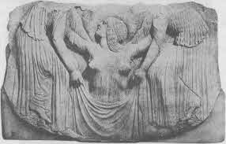

Çizim 11. Kahramanın Geri Gelişi: Tapınak Kapılarıyla Samson: İsa Dirilmiş: Yunus.
Yine de, insanlığın sağduyulu delilik binyılları boyunca binlerce ve binlerce kez doğrusuyla yanlışıyla öğretilmiş ve öğrenilmiş olan bir şeyi nasıl yeniden öğretmeli? Bu, kahramanın en son zor görevidir. Karanlığın insanı dilsiz bırakan ifadelerini aydınlık dünyanın diline nasıl geri taşımalı? iki boyutlu bir yüzeyde üç boyutlu bir biçimi ya da üç boyutlu bir imgede çok boyutlu bir anlamı nasıl ifade etmeli? Karşıtlık çiftlerini tanımlama girişimini anlamsız kılan her vahyi “evet” ve “hayır” terimlerine nasıl çevirmeli? Her şeyi yaratan hiçliğin iletisini, kendi duyularının açık kanıtında ısrar eden insanlara nasıl iletmeli?
Bu yaşam-onaylama eşiğinin güçlüklerini birçok başarısızlık kanıtlamaktadır. Geri dönen kahramanın ilk sorunu, bir görevi başarıyla gerçekleştirmenin ruhu tatmin eden tasavvuruna ait bir deneyimin ardından, yaşamın süregiden neşe ve acılarını, basmakalıp yanlarını ve gürültülü müstehcenliklerini gerçek olarak kabul etmektir. Böyle bir dünyaya neden geri gelmeli? Tutkuya boğulmuş erkek ve kadınlara, aşkın saadet deneyimini kabul edilir, hatta ilginç kılmayı neden denemeli? Geceleyin büyülü görünen düşlerin günün ışığında budalaca görünmesi gibi, şair ve peygamber, ölçülü gözlerle bakan bir kurulun önünde budalayı oynar halde bulabilirler kendilerini. Kolay olan tüm topluluğu şeytana havale etmek ve göksel mağaraya geri çekilmek, girişi sıkıca kapatmaktır. Fakat eğer bu arada bir ruhsal doğum uzmanı girişe shimenawa'yı germişse, zamanda ebediyeti ifade etmek ve zamanda ebediyeti kavramak işinden kaçınmak mümkün olmaz
Rip van Winkle’ın öyküsü dönen kahraman durumuna hoş bir örnektir. Rip macera ülkesine, her gece uykuya giderken yaptığımız gibi bilinçsizce gitti. Derin uykuda, der Hindular, benlik birleşir ve saadet doludur; bu yüzden derin uykuya bilişsel hal denir.{313} Ama karanlığın kaynağına yapılan bu gece ziyaretleriyle tazelenip güçlensek de, yaşamlarımız bunlarla değişmez; Rip gibi, elimizde yaşadıklarımızı gösterecek sakallarımızdan başka bir şey olmaksızın döneriz.
“Silahına el attı, fakat temiz, yağlanmış av tüfeği yerine, namlusu pasla kaplanmış, çakmağı parçalanmış, kundağını kurtlar yemiş bir eski çifte buldu yanında. ... Yürümek için kalktığında, kendini eklemleri uyuşmuş ve oturmak ister halde buldu. ... Köye yaklaştığında, hiçbirini tanımadığı birtakım insanlarla karşılaştı; bu da şaşırttı onu, çünkü çevredeki herkesi tanıdığını düşünürdü. Giyimleri de alıştığından farklıydı. Hepsi de şaşkınca bakıyordu ona ve gözlerini ona her diktiklerinde, değişmez biçimde çenelerini elliyorlardı. Bu hareketin yinelenişi, Rip’i istemsizce aynısını yapmaya sürükledi ve yaptığında, sakalının yerleri süpürdüğünü fark etti. Kendisinin ve çevresindeki dünyanın lanetlenmiş olup olmadığını merak etti.
“Rip’in uzun, kırlaşmış sakalı, paslı av tüfeği, kaba elbisesi ve çevresine toplanan kadın ve çocuk kalabalığı çok geçmeden tellal politikacıların dikkatini çekti. Onu baştan aşağı süzerek çevresinde toplandılar. Hatip ona yaklaştı ve onu bir kenara çekerek, kime oy verdiğini sordu. Rip budalaca bakakaldı. Kısa, ama işgüzar başka biri kolundan çekiştirdi ve ayak ucunda yükselerek, Federal mi Demokrat mı olduğunu sordu. Sivri üç köşeli şapkasıyla, anlayışlı, önemli görünen yaşlı bir beyefendi kalabalığı yararak önüne dikilip -bir eli böğründe, diğeri bastonunun üzerindeydi; keskin gözleri ve sivri şapkası sanki tam da ruhuna işliyordu- onun omzunda bir tüfek ve çevresinde bir kalabalıkla seçimlere niye geldiğini, köyde isyan mı çıkarmaya çalıştığını sorduğu zaman Rip yine hiçbir şey anlamadı. ‘Lütfen! Baylar,’ diye bağırdı Rip, ürkmüş bir halde, ‘ben zavallı, sessiz bir adamım, buranın yerlisiyim ve Kralın sadık kullarındanım, Tanrı onu korusun!’
“O an kalabalıktan bağırtılar yükseldi. ‘Bir Tori bu, bir Tori! Casus! Mülteci! Tutun onu! Götürün onu!’ Nüfuz sahibi görünümlü üç köşeli şapkalı adam oldukça güçlükle yatıştırdı kalabalığı.”{314}
Rip’in yazgısından daha da umut kırıcı olan bir şey, İrlandalı kahraman Oisin’in Gençlik Ülkesi Kralı’nın kızıyla uzun beraberliğinden döndükten sonra, başına gelenlerdir. Oisin zavallı Rip’ten daha başarılıydı; maceralar diyarında gözlerini açık tutmuştu. Bilerek (uyanık) bilinçdışının krallığına (derin uyku) inmişti ve uyanan kişiliğine bilinçdışı deneyimin değerlerini taşımıştı. Bir değişim sağlamıştı. Ama tam da bu oldukça arzulanır durum yüzünden, dönüşünün tehlikeleri artmıştı. Tüm kişiliği zamandışının güç ve biçimleriyle uyum içine girdiğinden, onun her şeyi zamanın biçim ve güçleriyle yalanlanmış, yıkılmış oldu.
Finn MacCool’un oğlu Oisin, bir gün adamlarıyla birlikte Erin’in ormanında avlanırken, Gençlik Ülkesi Kralı'nın kızıyla karşılaştı. Oisin’in adamları, efendilerini üç köpekle bırakarak ilerilere gitmişti. Ve onun karşısına da güzel bir kadın gövdesi, ama bir domuz kafası taşıyan gizemli bir yaratık çıktı. Kız domuz kafasının bir Kelt rahibinin büyüsü yüzünden olduğunu ve onunla evlenir evlenmez kaybolacağını söyledi. “Eh, başına gelen buysa,” dedi Oisin, “ve benimle evlenmek seni kurtaracaksa, domuz kafası üzerinde çok durmayacak.”
Domuz kafası gecikmeden halledildi ve beraber Tir na n-Og‘a, Gençlik Ülkesi’ne yola çıktılar. Oisin orada birçok mutlu yıllar boyunca krallık yaptı. Fakat bir gün doğaüstü gelinine dönüp şöyle dedi: “Bugün babamı ve adamlarını görmek için Erin’de olmak istiyorum.”
“ ‘Gidersen,” dedi eşi, ‘ve Erin toprağına ayak basarsan, geri gelemezsin ve yaşlı kör bir adam olursun. Buraya geleli ne kadar oldu sanıyorsun?’
“ ‘Herhalde üç yıl,’ dedi Oisin.
“ ‘Üç yüzyıl oldu benimle bu krallığa geldiğinden bu yana. Eğer Erin’e gitmen gerekiyorsa, yanına bu küheylanı vereceğim; ama bu küheylandan inersen ya da ayağın Erin toprağına değerse, küheylan o an geri gelecek ve bıraktığı yerde, yoksul yaşlı bir adam olarak kalacaksın.’
“ ‘Korkma, geri döneceğim,’ dedi Oisin. ‘Dönmek için nedenlerim yok mu? Ama gidip de bir kez daha Erin’deki babamı, oğlumu ve dostlarımı görmeliyim; uzaktan da olsa görmeliyim.
“Kız, Oisin için küheylanı hazırladı ve ‘Bu küheylan seni nereye istersen götürecek,’ dedi.
“Oisin, küheylan Erin toprağına ulaşıncaya dek durmadı; ve Münster’deki Knock Patrick’e dek gitti, inek güden bir adam gördü. İneklerin otladığı yerde geniş, düz bir taş vardı.
“ ‘Buraya gelip,’ dedi Oisin çobana, ‘bu taşı ters çevirir misin?’
“ ‘Doğrusu, hayır,’ dedi çoban, ‘çünkü ne ben ne de benim gibi yirmisi kaldıramaz onu.’
“Oisin taşa yaklaştı, onu attan inmeden tutup çeviriverdi. Taşın altında bir deniz kabuğu gibi sarmallanan bir Fenian boynuzu (borabu) vardı ve Erinli Fenianlardan biri borabu’yu üflediğinde, diğerlerinin ülkenin neresinde olursa olsun hemen toplanmaları adetti.{315}
“ ‘Bana şu boynuzu getirir misin?’ dedi Oisin çobana.
“ ‘Getiremem,’ dedi çoban, ‘çünkü ne ben ne de benim gibiler onu yerden kaldıramaz.’
“O zaman Oisin boynuza yaklaştı ve eğilip eline aldı; fakat üflemede o kadar acele ediyordu ki heyecanlandı, aklı başından gitti ve eğilirken kayınca bir ayağı toprağa değdi. O anda küheylan kayboluverdi ve Oisin toprağa kör bir adam olarak düştü.”{316}
Cennetteki tek bir yılın dünyanın yüz yılına bedel olması mitlerde bilinen bir motiftir. Tam bir yüz yıllık çevrim bütünlüğü belirtir. Benzer biçimde, dairenin üç yüz altmış derecesi de bütünlüğü belirtir; buna uygun onlarak Hindu Puranaları tanrıların bir yılını insanların üç yüz altmış yılına bedel olarak gösterir. Olimposlular açısından, tam bir çevrimin ahenkli biçimini durmaksızın sergileyerek dünya tarihi çok uzun süreler süregider, böylece insanların yalnızca değişimi ve ölümü gördüğü yerde, kutsanmışlar değişmez biçimi, sonu olmayan dünyayı görürler. Fakat şimdi sorun anlık bir dünyevi acı ya da neşe karşısında bu kozmik bakış açısını sağlayabilmektir. Geçici bilginin meyvelerinin tadı ruhun yoğunlaşmasını çok uzun sürenin merkezinden tek bir anın çevresel dönüm noktalarına sürükler. Mükemmellik dengesi kaybolur, ruh bocalar ve kahraman düşer.
Kahramanı yerle birebir temastan uzak tutmak, ama yine de dünya insanları arasında gezinmesini sağlamak üzere, tecrit edici at fikri, doğaüstü güç taşıyanların sıkça aldıkları temel önlemin canlı bir örneğidir. Meksika imparatoru Montezuma ayağını yere hiç değdirmedi; her zaman soyluların omuzlarında taşınırdı ve yere inmek isterse yürümesi için gösterişli bir halı serilirdi. İran şahı sarayı içinde başkasının dokunamadığı halılar üzerinde gezinirdi; onun dışında hiç yürürken görülmemişti, hep ya bir arabadaydı ya da at sırtındaydı. Daha eskilerde, ne Uganda kralları, ne anneleri, ne de kraliçeleri yaşadıkları geniş yerlerin dışında yere basarken görülebilirdi. Gittikleri her yere Bufalo kabilesinin, bazısı bu yüksek şahsiyetlere yolculukta da eşlik eden ve yükü sırasıyla devralan erkeklerinin omuzlarında taşınırlardı. Kral, taşıyıcısının iki bacağı iki omzunun üstünde ve ayakları taşıyanın koltuk altına sıkışmış şekilde otururdu. Bu saray hamalları yoruldukları zaman kralı, onun yüce ayaklarını yere değdirmeksizin bir başka adamın omuzlarına geçirirdi.{317}
Sir James George Frazer, dünyanın her yerinde görülen tanrısal kişiliğin yere ayak basamaması olgusunu şu şekilde açıklar: “Belli ki, kutsal ya da tabu kişilerde bulunması gereken kutsallık, büyüsel meziyet, tabu ya da gizemli nitelik diyebileceğimiz o şey, ilkel filozof tarafından, kutsal kişinin bir Leyden kavanozunun elektrik yüklenmesi gibi yüklendiği bir fiziksel bir öz ya da sıvı olarak kabul edilir; ve kavanozdaki elektriğin iyi bir iletkene sürtülerek akıtılması gibi, kişideki kutsallık ya da büyüsel meziyet de, bu kurama göre büyüsel sıvı için mükemmel bir iletken hizmeti gören toprağa sürtünmeyle akıtılabilir. Bu yüzden yükün boşa gitmesini engellemek için, kutsal ya da tabulu kişinin yere değmesi engellenmelidir; elektriksel dille, eğer ufak bir şişe gibi ağzına dek dolu olduğu değerli öz ya da sıvısı boşaltılmayacaksa, yalıtılmalıdır. Ve birçok durumda tabulu kişinin yalıtımı yalnız kendi yararı için değil, diğerlerinin yararı için de bir önlem sayılır; çünkü kutsallığın meziyeti bir bakıma en küçük bir dokunuşun bile harekete geçirebileceği güçlü bir patlayıcı olduğundan, yaygın korunma için, değdiği her şeyi yakıp kavurmasın ve yok etmesin diye onu dar sınırlar içinde tutmak gerekir.”{318}
Önlem için şüphesiz psikolojik bir doğrulama vardır. Nijerya cangıllarında akşam yemeği için giyinen İngiliz, yaptığında bir anlam olduğunu düşünür. Ritz’in lobisine sakallı olarak giren genç sanatçı, tuhaflığını açıklamaktan keyif alacaktır. Din adamını yakalığı ayrı kılar. Yirminci yüzyıldaki bir rahibe Ortaçağ giysileriyle dolaşır. Evli kadın yüzüğüyle, az ya da çok, yalıtılmış olur.
W. Somerset Maugham’ın öyküleri, beyaz adamın smokin tabusuna aldırmayan uşaklarının başına gelen dönüşümleri anlatır. Birçok halk şarkısı atılmış yüzüğün tehlikelerine tanıklık eder. Ve mitler -örneğin, büyük yapıtı Başkalaşımlar’da Ovidius tarafından toplanmış olan mitler- aşırı yoğunlaşmış bir güç merkezi ile bunu kuşatan dünyanın daha düşük güç alanı arasındaki yalıtımı, gerekli önlemler alınmadan birdenbire kaldırıldığında gerçekleşen sarsıcı dönüşümleri tekrar tekrar anlatır. Keltlerin ve Cermenlerin peri bilgisine göre, gündoğumunda dışarıda olan bir gnome ya da elf o anda bir sopa ya da taşa dönüşür.
Geri dönen kahraman, macerasını tamamlamak üzere dünyanın etkisini atlatabilmelidir. Rip van Winkle ne yaşadığını hiç bilmedi; dönüşü bir şakaydı. Oisin biliyordu, fakat ona ilgisini kaybetti ve yenildi. Kamerüzzaman hepsinden şanslıydı. Derin uykunun hazzını uyanık karşıladı ve inanılmaz macerasından günün ışığına öyle ikna edici bir tılsımla döndü ki, her türlü üzücü hayal kırıklığına karşı özgüvenini korumayı başardı.
O kulesinde uyurken, Dahnaş ve Maymunah adlı iki cin, uzak Çin'den Yedi Saray ve Adalar ve Denizler Efendisi’nin kızını getirdiler. Adı Prenses Budur’du. Bu genç kızı İranlı prensin yatağına, uyur halde bıraktılar. Cin ikisinin de yüzünü açtı ve ikiz gibi durduklarını gördü. “Maşallah,” dedi Dahnaş, “ey sultanım, benim sevdiğim daha güzel.” Fakat Kamerüzzaman’ı seven dişi ruh karşı çıktı: “Hiç de değil, güzel olan benimki.” Dahnaş sonunda tarafsız bir hakem getirmelerini önerinceye dek çekişip tartıştılar.
Maymunah yeri topukladı ve yerden tek gözü kör, kambur, çıbanlı, göz çukurları ayrık bir İfrit çıktı; ve başında yedi boynuz vardı; omuzlarına dört salkım saç düşüyordu; elleri tarak ve bacakları fıçı gibiydi; ve aslan pençeleri gibi tırnakları, yaban eşeklerinin toynakları gibi ayakları vardı. Canavar, Maymunah’ın önünde saygıyla yeri öptü ve ne istediğini sordu. Yatakta, birbirinin boynuna dolanmış bir halde yatan iki kişi arasında seçim yapacağını öğrenince, güzelliklerine hayran olarak uzun uzun baktı onlara, sonra Maymunah ile Dahnaş’a dönüp yargısını bildirdi.
“Maşallah, doğrusunu isterseniz,” dedi, “ikisi de eş güzellikte. Erkek mi kadın mı olduklarını bile ayırt edemiyorum. Ama ben derim ki, onları sırayla uyandıralım ve daha çarpıcı olanın hangisi olduğu uyanıkken belli olsun.”
Kabul ettiler. Dahnaş bir pireye dönüştü ve Kamerüzzaman' boynundan ısırdı. Delikanlı uykudan uyanıp ısırığı ovaladı, iyice kaşıdı ve bu arada az bir şey yana döndü. Yanıbaşında nefesi amberden tatlı ve teni kaymaktan yumuşak bir şeyin yattığını anladı. Şaşırdı. Doğruldu.

Levha XV. Dönüş (Antik Roma).
Yanındakine daha yakından baktı ve onun inci ya da parıldayan güneşe benzeyen, insanın sağlam bir duvarın üzerine çıkıp çok uzaktan gördüğü kubbeye benzeyen bir genç kadın olduğunu gördü.
Kamerüzzaman onu uyandırmaya çalıştı, fakat Dahnaş uykusunu ağırlaştırmıştı. Delikanlı sarstı onu. “Ey sevdiğim, uyan ve bana bak,” dedi. Ama o kımıldamadı. Kamerüzaman, Budur’un babasının evlenmesini istediği kız olduğunu düşündü ve küçük parmağından mühür yüzüğünü çıkartıp kendininkiyle değiştirmekle yetindi. Sonra İfritler onu uykuya döndürdüler.
Budur’un başına gelenler Kamerüzzaman’ın tersiydi. Kimsenin seyrettiğini düşünmüyor, bundan korkmuyordu. Dahası, onu uyandıran Maymunah, dişi muzipliğiyle bacağında ilerlemiş ve ateşli bir yerden ısırmıştı.